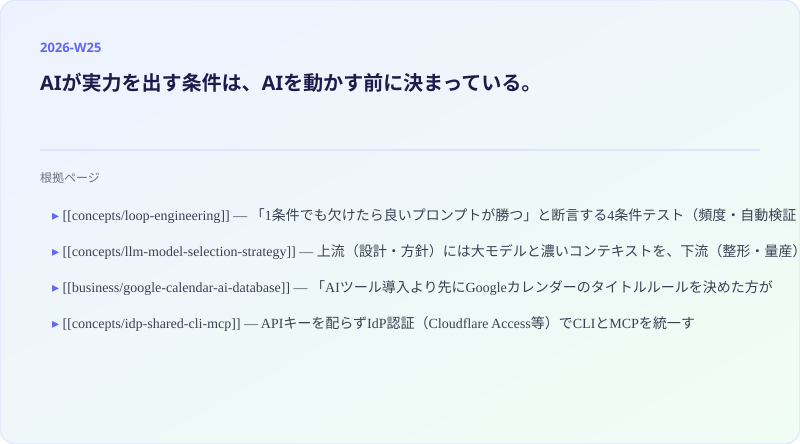

Weekly Insights: 2026-W25（2026-06-15〜06-21）
今週の中心テーマ
AIが実力を出す条件は、AIを動かす前に決まっている。

今週ingested されたページを横断すると、「どう使うか」より「動かす前に何を整えるか」という問いが繰り返し現れた。ループには4つの前提条件がある（loop-engineering）。モデルは工程ごとに配分しないと最大の損失になる（llm-model-selection-strategy）。AIが業務を理解するにはデータが先に構造化されている必要がある（google-calendar-ai-database）。人間もAIも同じ認証経路で動ける基盤がなければ「AI-Ready」とは言えない（idp-shared-cli-mcp）。どのページも「実行」より「仕込み」を先においている。
先週のテーマ（言語化された判断をループに配線する）が「何を資産化するか」を問うていたとすれば、今週のテーマはその一段手前——「その資産を活かせる構造が整っているか」を問う。
なぜそう見えるか（根拠ページ）
- loop-engineering — 「1条件でも欠けたら良いプロンプトが勝つ」と断言する4条件テスト（頻度・自動検証・ツール・トークン予算）が、ループ導入の前にすべきことを明確化している。「まず手動で1回信頼できる実行を作る→スキル化→ループでラップ」という順序が設計の前置きを強制する
- llm-model-selection-strategy — 上流（設計・方針）には大モデルと濃いコンテキストを、下流（整形・量産）には小モデルを当てる「サンドイッチ設計」。「全工程に最強モデルを使う」のが最弱の運用になる逆説。コンテキストエンジニアリング（冒頭で前提・制約・ゴール・評価基準を渡し切る）が上流の「仕込み」として決定的になる
- google-calendar-ai-database — 「AIツール導入より先にGoogleカレンダーのタイトルルールを決めた方が効果が出たりして」という問いかけが記事の核心。業務データが構造化されていなければAIは業務を理解できない。自動化の起点はツールではなくデータの整備
- idp-shared-cli-mcp — APIキーを配らずIdP認証（Cloudflare Access等）でCLIとMCPを統一する基盤設計。人間もAIも同じ認証経路を通ることで、AIは「それを動かす人間の身元」で動く。入退社管理まで一元化されて初めて「会社がAI-Readyになる」
既存wikiとの接続
- spec-driven-development — 「走り出す前に決め切る」発想は仕様駆動開発と同根。上流に投資してから実行するモデル選択戦略は、スペックを先に固めてからAIに渡すspec-drivenの思想と構造が重なる
- self-refining-skills — loop-engineeringの「2回以上やることはスキル化し、ループがスキルを呼ぶ」設計と直接つながる。スキルが再利用単位として蓄積されることで、「仕込み」そのものが複利になる
- agentic-coding — ループエンジニアリングが成熟した先にある実践形態。エージェントがコードを書くためには動ける環境（ツール・メモリ・ゲート・スキル）が先に整っている必要があり、本週のテーマの帰結がここに向かう
sugeta-san への問い
自分が毎週回しているwiki-ingest/insights生成ループを、loop-engineeringの4条件テストにかけると何点か？
→ 頻度（週次以上）と自動化（launchd）はクリアしている。ただし「自動ゲート」（不正出力を機械的に弾く仕組み）と「エスカレーション設計」（AIだけで判断できない場合の人間へのバックチャンネル）は今の構成に明示的に組み込まれていない。ループの品質は「動いている」だけでなく「正しく動いていることを確認する仕組みがあるか」で測られる。
今週の小アクション（5分）
自分がAIに繰り返させている作業を1つ選んで、4条件テストを紙に書き出す。「週次以上か・自動ゲートがあるか・ツールがあるか・ハードストップがあるか」——4つすべてにYesがつかなければ、まだループではなくプロンプトが正しい選択かもしれない。
いますぐAIと一緒に（コピペ）
以下をそのままClaude / Claude Codeに貼って、繰り返し行っているAI作業のループ適性を判定してみてください:
私が繰り返し行っているAI作業として [作業名をここに] があります。
以下の4条件テストを使って、この作業をループ自動化すべきかを判定してください。
1. タスクは週1回以上繰り返されるか？
2. 「正しく完了した」を自動で検証できるゲート（テスト・ビルド・lint等）を設けられるか？
3. エージェントがログ・コード実行・ファイル操作など必要なツールを持てるか？
4. コスト上限・最大イテレーション数・タイムアウトのハードストップを設計できるか？
すべてYesなら: 最小構成ループ（MVL）として必要な4要素（自動化・スキル・状態ファイル・ゲート）の設計案を出してください。
Yesでない条件がある場合: なぜ今は「良いプロンプト」が勝るか、条件を整えるために何が必要かを説明してください。
参考: wiki/concepts/loop-engineering.md
さらに読むべきページ
- ai-agent-building-blocks — ReActループ＋5ブロック（脳・手・記憶・ループ・検証）のフレームワーク。「検証ゲートを1ステップ足すだけで信頼性が大きく変わる」という主張が、今週の「整える」テーマの具体的な実装例になっている
- harness-engineering — 「ループを走らせる静的な制約・フィードバック機構の設計」。ループエンジニアリングとセットで読むと、動的な実行（ループ）と静的な枠組み（ハーネス）の役割分担が見えてくる
- claude-fable-5 — 「環境フィードバックに応じて自己修正できるループを設計する方が性能を引き出せる」という設計含意。Fable 5の能力はプロンプト単体でなくループ設計によって引き出されることが実験で示されている
今週の音声ニュース
